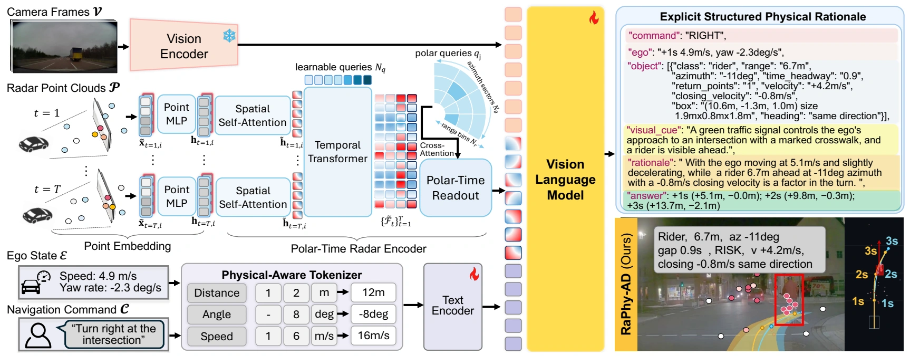
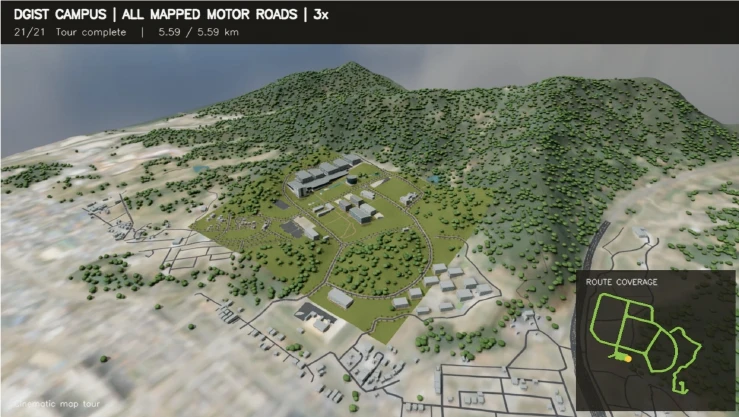
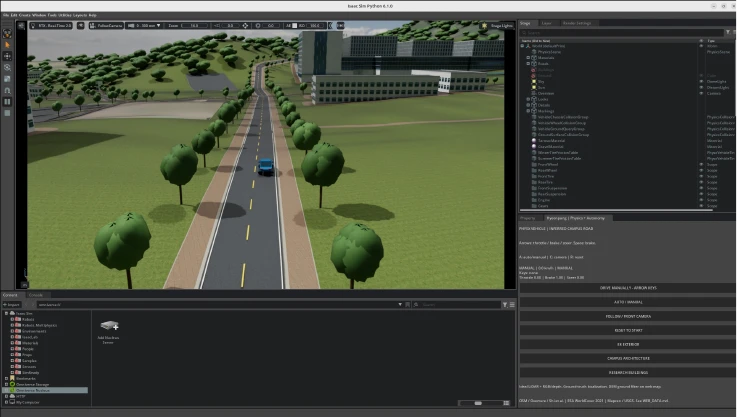
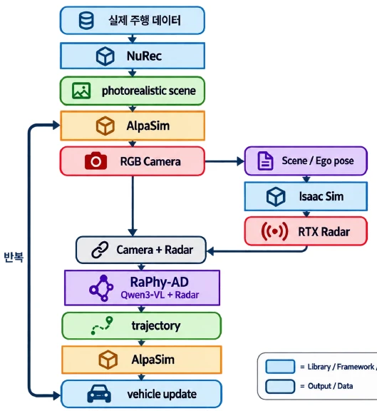

Radar meets language.
mmWave 포인트 클라우드를 LLM이 이해할 수 있도록 표현합니다. 레이더 신호의 textualization, instruction tuning, 직접 입력을 위한 encoder를 연구합니다.
mmWave · Representation learningMULTIMODAL AI · PHYSICAL INTELLIGENCE
레이더의 물리적 관측과 언어 모델의 추론을 연결합니다.
인지에서 판단, 그리고 행동으로 이어지는 멀티모달 AI를 연구합니다.
Postdoctoral Researcher · KAIST InnoCore LLM
Working at DGIST

Radar × Vision × Language
01 / ABOUT
멀티모달 융합 AI를 통해 실제 세계의 정보를 읽고, 그 근거를 설명하는 기술을 만듭니다.
NLP와 Computer Vision에서 출발해 Radar-AI, Physical AI, 자율주행으로 연구를 확장해 왔습니다. 센서 표현 학습부터 학습 데이터 구축, 모델 학습과 시뮬레이션까지 연결합니다.
AI 관련 논문
주저자 논문
AI 연구 과제
첨부 연구 소개 자료 기준
KAIST InnoCore LLM · Postdoctoral Researcher
Working at DGIST
경북대학교 박사
경북대학교 석사
02 / RESEARCH INTERESTS
센서의 표현부터 언어 기반 추론까지.
네 가지 연구 축을 연결합니다.
mmWave 포인트 클라우드를 LLM이 이해할 수 있도록 표현합니다. 레이더 신호의 textualization, instruction tuning, 직접 입력을 위한 encoder를 연구합니다.
mmWave · Representation learningRGB, Radar, IR을 함께 이해하는 VLM/VLA를 연구합니다. 장면 이해와 행동 선택을 연결하고 로봇 조작과 내비게이션으로 확장합니다.
Multi-sensor VLM / VLACamera + Radar + Language로 주행 상황을 이해하고 궤적을 생성합니다. 물리적 관측에 근거한 reasoning을 자율주행 모델에 통합합니다.
Physical CoT · Trajectory planning문서와 영상 이해, 요약, 환각 검출 및 수정, RAG와 Video QA를 연구합니다. 추론 시점 확장을 통해 영상 이해 능력을 탐구합니다.
Video QA · RAG · Hallucination03 / FEATURED RESEARCH
ICLR 2027 SUBMISSION거리·방위각·도플러 속도를 명시적 물리 추론으로 변환하는 Radar-Aware Foundation Model. 관측된 물리량에 근거해 주행 판단을 설명하고 미래 궤적을 예측합니다.

MODEL ARCHITECTURE · 확대 보기 ↗거리, 방위각, Doppler와 시간 구조를 보존하며 레이더 관측을 VLM 입력 토큰으로 변환합니다.
수치와 단위를 하나의 토큰으로 묶어 물리적 의미를 보존합니다. 예: 12m, −8deg, 16m/s.
구조화된 추론을 학습한 뒤, 검증 가능한 보상으로 물리량과 궤적 예측을 정교화합니다.
PhysicalAI-AV · Average L2
Alpamayo 1 대비 평균 L2 오차
nuScenes · Zero-shot Average L2
제공 자료의 보고 수치 · SFT + GRPO · 1,210 held-out clips / 1,287 trajectory anchors.
궤적 예측 평가 결과이며 실제 도로의 closed-loop 안전성 검증을 의미하지 않습니다.
Data pipeline. 160,761개 radar-equipped clips와 2,984,608개의 multimodal instruction-response pairs. VLM 장면 설명, 사람의 라벨링, video·metadata RAG를 통해 long-tail 시나리오를 선별합니다.
Training tasks. 객체 검출, 주변 객체·자차 궤적 예측, 장면 설명, Physical CoT, QA를 함께 학습합니다.
Evaluation. 1 / 2 / 3초 예측 구간에서 L2 error와 collision rate를 평가하며 야간, 눈, 안개 및 보행자·차량 상호작용을 포함합니다.
04 / SIMULATION EXPERIENCE
재구성부터 멀티센서 관측과 모델 추론까지.
자율주행 시뮬레이션을 연결합니다.

NVIDIA DRIVE SIMULATION현풍 DGIST 캠퍼스의 도로·건물·주변 지형을 반영한 3D 주행 환경을 구축하고, 차량을 배치해 도로 구간에서 주행 시뮬레이션을 수행했습니다.

NUREC · ALPASIM · ISAAC SIMNuRec 장면 재구성, AlpaSim RGB 관측, Isaac Sim RTX Radar를 연결합니다. RaPhy-AD가 예측한 궤적을 시뮬레이터에 반영하고 차량 상태를 반복 갱신합니다.

05 / RESEARCH EXPERIENCE
데이터, 모델, 실제 적용을 잇는
연구 과제 경험입니다.
Radar + LLM 및 VLA 학습 데이터 생성과 학습 파이프라인 구축
공장 안전을 위한 멀티센서 융합 모델 개발
에어컨 공장 자동 검증을 위한 Test Code Generation Tool Agent 개발
LLM 요약 보고서의 hallucination 검증 및 수정
Video QA와 Document Summarization 모델 연구 및 개발
LET’S CONNECT